USB通信协议¶
从时间角度来看， USB 通信由一系列帧构成。每一帧都有一个帧开始（SOF），随后是一个或多个数据操作。每一个数据操作都由一系列数据包构成。一个数据包由一个同步信号开始，结尾是一个数据包结束（EOP） 信号。一个数据操作至少有一个令牌数据包。具体的数据操作可能有一个或多个数据数据包；一些数据操作可能会有一个握手数据包，也可能没有任何握手数据包。
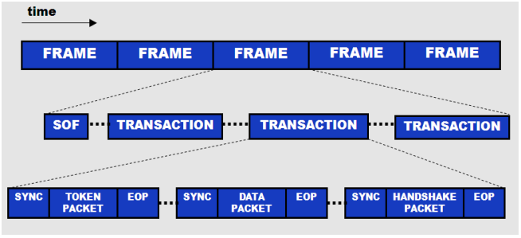
数据操作是对数据包进行交换的操作，该操作使用了三种不同的数据包：一个令牌数据包、一个数据数据包（可选的）和一个握手数据包。
这些操作都在各个帧内进行，始终不会超过帧（除了高速同步传输以外）或终止其他数据操作。 下图显示了数据操作的框图。
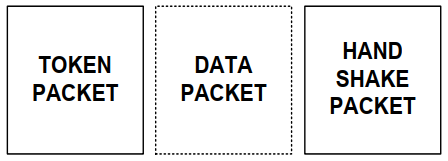
每个数据包可能带有不同的信息块。所带有的信息会因数据包类型的不同而异。下面列出了数据包可包含的各种信息。
数据包的结构如下图所示。 此图可作为数据包的模板；可从这里添加或提取信息。
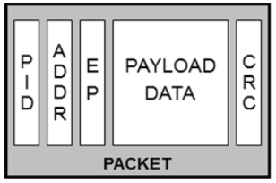
- 数据包 ID（ PID） — （8 位： 4 个类型位和 4 个错误检测位）。 这些位将数据传输定义为 IN/OUT/SETUP/SOF
- 可选的设备地址 — （7 位：最多可支持 127 个设备）
- 可选的端点地址 — （ 4 位：最多支持 16 个端点）。 USB 规范支持多达 32 个端点。 虽然 4 位地址最多仅支持 16个端点，但我们具有一个 IN PID 和一个 OUT PID，它们各自使用了端点地址 1 到 16，因此共有 32 个端点。 请注意，它表示端点的地址，而不是端点的编号
- 可选的加载数据 — （0 到 1023 字节）
- 可选的 CRC — （5 或 16 位）
数据包类型¶
令牌数据包¶
- 开始数据操作
- 指定与传输有关的设备
- 始终由主机发送
令牌数据包始终由主机发送，用于定义总线上的数据传输。令牌数据包的类型取决于所执行的传输。 IN 类型用于要求设备将数据传输给主机。 OUT 类型用于将数据从主机传输给设备。 SETUP 类型用于将命令从主机传输给设备。 SOF 类型用于确定数据操作帧。 IN、 OUT 和 SETUP 令牌数据包都有一个 7 位设备地址、 4 位端点 ID 和 5 位CRC。
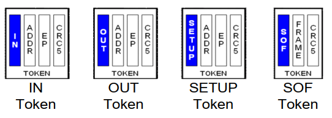
SOF 令牌数据包有助于设备确定帧的开始，并与主机进行同步化。该数据包还有助于防止设备进入挂起模式（经过 3ms 后，如果设备未收到 SOF，会发生这种情况）。 SOF 数据包适用于全速和高速设备，并且每隔 1 ms 发送一次。该数据包具有一个 8 位的 SOF PID、 11 位的帧计数值（达到最大值时进行反转）和一个 5 位的 CRC。
CRC 是该数据包使用的唯一一个错误检测方法。传输 SOF 数据包时，不会使用握手数据包。高速通信使用了更小的时间单位，即微帧。对于高速设备， SOF 每经过 125 us 发送一次，而帧计数值则每经过 1 ms 递增“1” 。
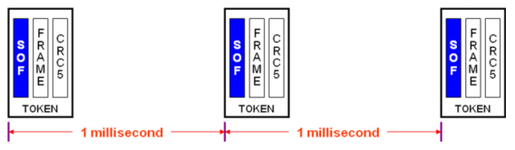
数据数据包¶
- 传输加载数据
- 由主机或设备发送
数据数据包是随 IN、 OUT 和 SETUP 令牌数据包之后所发送的数据包。加载数据的尺寸会因传输类型的不同而异，该尺寸范围为 0 到 1024 字节。在每一个数据数据包成功传输后，数据包 ID 在 DATA0 和 DATA1 之间切换，数据包由一个16 位 CRC 结束。
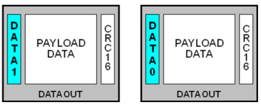
在每一个数据数据包成功传输后，主机和设备将对数据切换进行相应的更新。数据切换的优点在于它可作为附加的错误检测方法。如果接收到的数据包 ID 同预期的不一样，则设备可判断传输中发生了错误，并可能进行适当的处理。使用数据切换的示例是 ACK 在发送后，仍未能收到时。在该示例中，发送方将数据从‘1’ 更新为‘0’ ，但接收方则没有进行相应的更新，而仍然保持为‘1’ 。因此，在下一个数据步骤中，主机和设备将不再同步，这样会引起错误。 下图显示了一个 USB 传输中的数据切换示例。白色框表示来自主机的传输，黑色框则表示来自设备的传输。
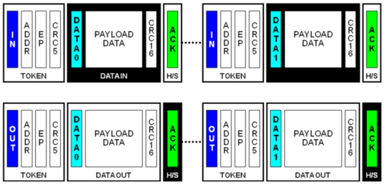
握手数据包¶
- 确认已接收到无错误的数据
- 由接收方发送
握手数据包指示数据操作的结束。每个握手数据包都带有一个 8 位数据包 ID，并由传输中的接收方发送。每一种 USB 速度都有不同的握手数据包响应选项。 所支持的类型由 USB 速度决定：
- ACK： 确认数据操作成功完成。 （ LS/FS/HS）
- NAK： 否定确认。（ LS/FS/HS）
- STALL： 设备发送错误指示。 （ LS/FS/HS）
- NYET： 表示设备当前未能接收其他数据数据包。 （仅 HS）
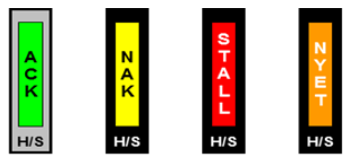
特殊数据包¶
- 支持多种不同的速度
- 由主机传输给集线器设备
USB 规范定义了四种特殊数据包。
- PRE： 主机向集线器发送的数据包，用于指示下一个数据包是低速的。
- SPLIT： 发送在令牌数据包之前，用于指示一个分割数据操作。 （仅 HS）
- ERR： 由集线器返回的数据包，用于报告分割数据操作中发生了错误。 （仅 HS）
- PING： 接收到 NYET 握手数据包后，检查批量传输 OUT 或控制写入的状态。 （仅 HS）
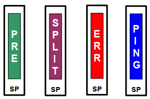
数据传输类型¶
USB 数据传输是指主机和设备之间的数据传输方式。一共有三种不同的数据传输类型，它们经常使用不同名称来代表相同的概念。这三种不同的数据传输类型具体如下。
IN/读取/上行数据传输¶
IN、读取和上行是专用术语，表示从设备到主机的数据传输方式。通过发送一个 IN 令牌数据包，主机将启动这些数据传输。目标设备将发送一个或多个数据包，主机则发送一个握手数据包来作出响应。白框显示的是从主机发送的数据传输，黑框显示的是从设备发送的数据传输。
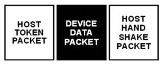
设备发送了 NAK 作为响应，从而指出主机发送请求时，它还没准备好发送数据。主机持续发出请求，如果设备已经准备好，它将发送一个数据包来响应主机。然后，主机将发送一个 ACK 握手数据包来确认接收到设备发送的数据。
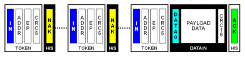
OUT/写入/下行数据传输¶
OUT、写入和下行是专用术语，指的是从主机到设备的数据传输方式。在这种数据传输类型中，主机将发送相应的令牌数据包（包括 OUT 或 SETUP），然后发送一个或多个数据包。接收设备将发送相应的握手数据包，以结束数据传输。白框显示的是从主机发送的数据传输，黑框显示的是从设备发送的数据传输。
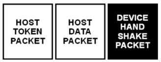
主机将发送 OUT 令牌数据包和 DATA0 数据包，但会接收到设备所发送的 NAK 信号。然后，主机会重新尝试发送数据。请注意，由于握手数据包被拒绝，因此不会改变数据切换位的状态。如果主机再次尝试发送数据， 设备将发送一个 ACK 信号来响应主机，从而指出 OUT 数据传输已经成功。
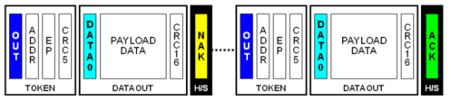
控制数据传输¶
控制数据传输用于识别、配置和控制设备。这种数据传输使主机能够读取设备的信息、设置设备地址、建立配置和发送特定命令。控制数据传输始终针对设备的控制端点。控制数据传输有三个阶段：建立阶段、（可选）数据阶段和状态阶段。 下图显示的是由主机传送的三个阶段。数据阶段外的虚线表明这是一种可选的数据传输。
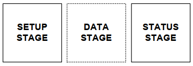
建立阶段（或建立数据包）仅用于一个控制数据传输。需要将大小为 8 字节的数据包（包含 USB 请求）从主机发送到设备。 设备必须始终确认建立阶段，不能否认一个建立阶段。
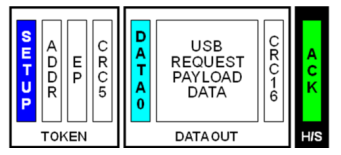
在一个控制数据传输中，可以选择使用数据阶段。该阶段可以进行多次数据传输。只有在主机和设备之间传送数据负载时，才需要使用数据阶段。通常，控制阶段的相应数据可以在建立阶段中传送。
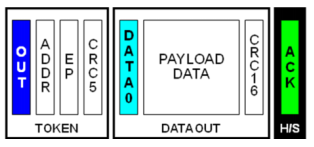
最终阶段 — 状态阶段包括单个 IN 或 OUT 数据传输，这种数据传输会报告先前阶段是否成功。数据包始终为 DATA1（与在 DATA0 和 DATA1 间切换的 IN 和 OUT 正常数据传输不同），并且包含了长度为零的数据包。接收先前数据包的设备会发送一个握手数据传输，以结束状态阶段。
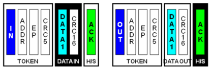
USB 通信一共有三种控制数据传输类型：
- 控制写入
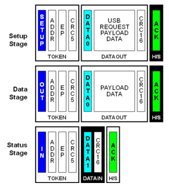 - 控制读取
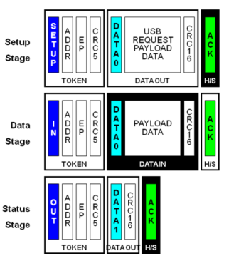 - 控制无数据
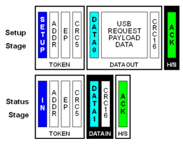
数据结构详解¶
包(Package)¶
- 包结构：
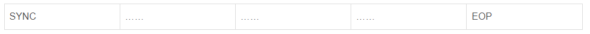 - 不同类型的包，组成位域是不相同的，主要有这几个域：
- 包标识符(PID)
- 包目标地址(ADDR)
- 包目标端点(ENDP)
- 数据域
- 循环冗余校验码(CRC)
- 包标识符（PID）：
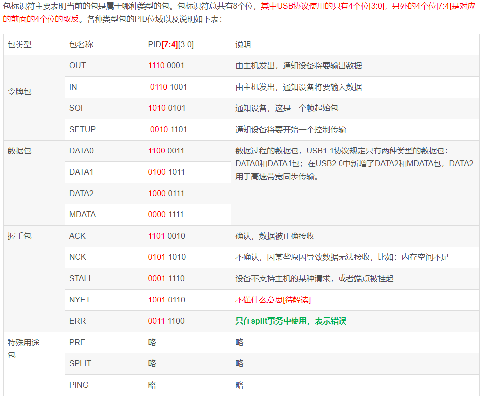 - 令牌(Token Packet)包
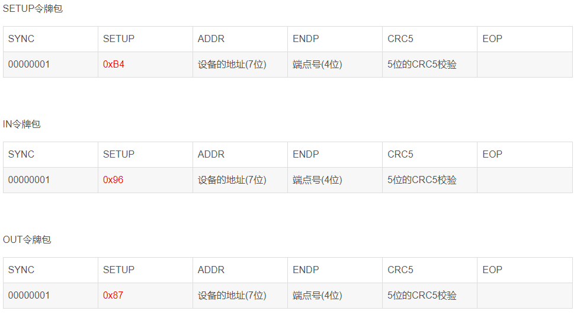
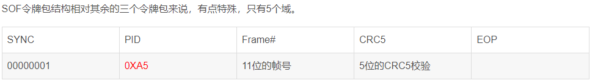 - 数据(DATAx)包
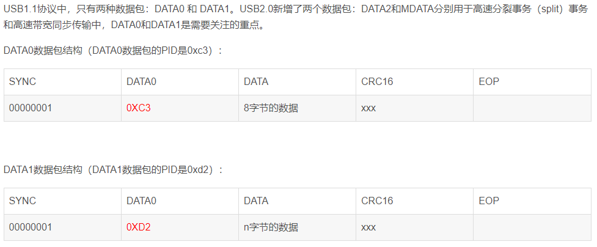 - 握手(ACK)包
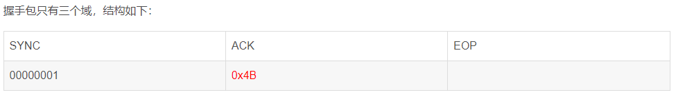
事务(Transaction)¶
- 一个事务通常由两个或者三个包来组成：令牌包+数据包+握手包
- 事务总是以令牌包开始，所以令牌包的类型决定事务的类型，可分为：SETUP事务、IN事务、OUT事务。
传输(Transfer)¶
- 控制传输过程分为三个阶段：第一个阶段是建立阶段；第二个阶段是可选的数据阶段；第三个过程是状态阶段。
三者关系¶
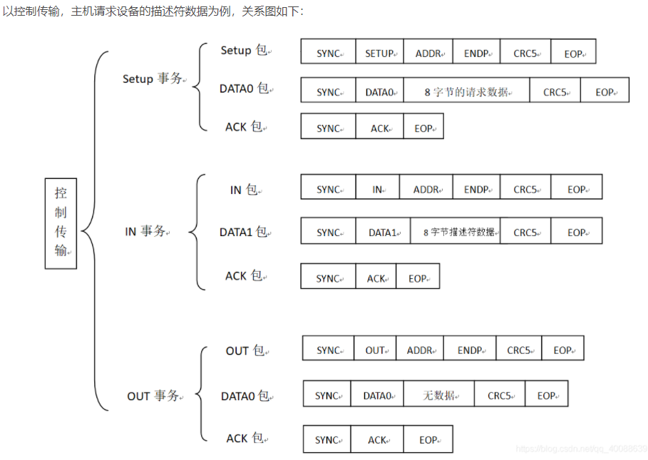
实例：Host请求设备描述符
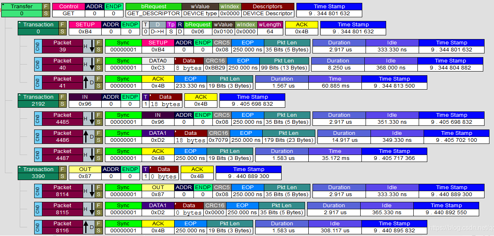